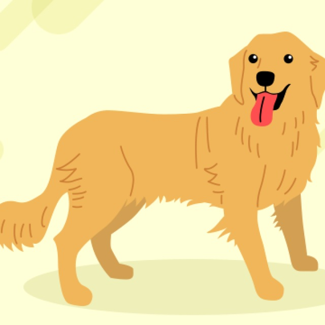

천사견, 골든 리트리버

다른 사람이 겪는 고통에 함께 슬퍼하는 당신! 공감 능력이 뛰어난 골든 리트리버를 닮았네요. 골든 리트리버는 따뜻하고 친근한 성격 덕분에 다양한 분야에서 사람들을 돕는 역할을 하는 견종이죠. 이런 골든 리트리버처럼 당신은 타인의 고통을 덜어주기 위해 적극적으로 노력하는 사람입니다. 너그럽고 유연한 마음의 소유자로, 험난한 세상을 조금 더 따뜻한 곳으로 만들어주는 등불 같은 존재네요.